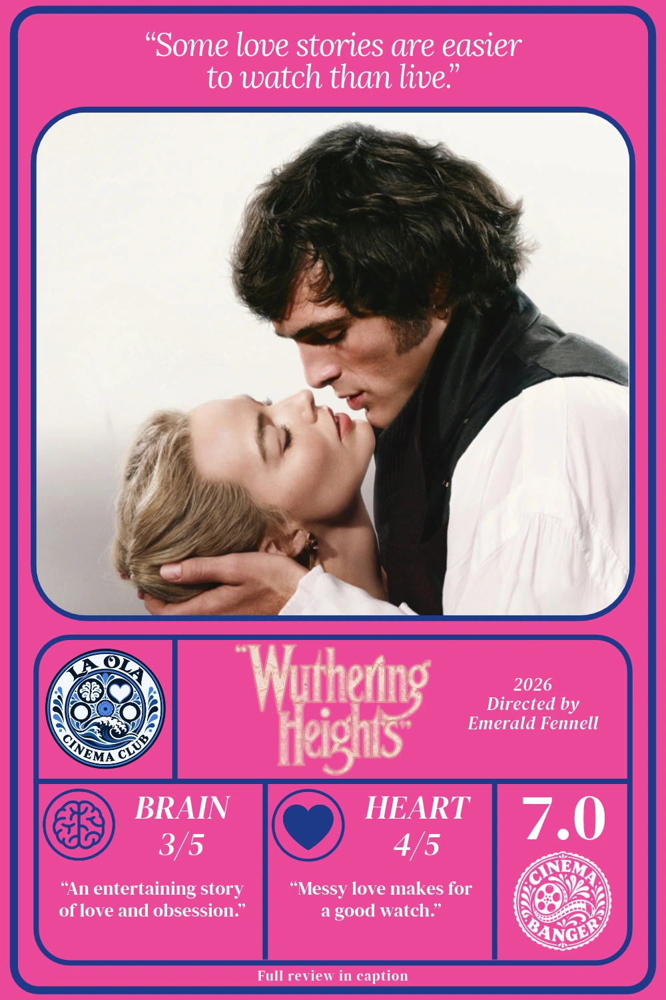

La Ola Cinema Club
From the collection
Wuthering Heights
“Some love stories are easier to watch than live”
From the Brain
An entertaining story of love and obsession
From the Heart
Messy love makes for a good watch

Cinema BangerBig-screen energy. The kind of watch we want to talk about on the way out.